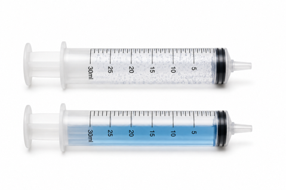
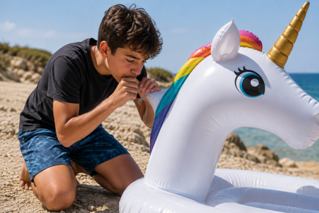

أنهينا مرحلة التعلّم، وسننتقل إلى التدريب الأول ونجيب عن
يجب أن تجيبوا إجابة صحيحة عن 3 أسئلة على الأقل.
نقلنا كمية ثابتة من الهواء من زجاجة صغيرة إلى مرطبان كبير وأغلقناه.
أمامكم ثلاث صور للمرطبان صُبغ فيها الهواء باللون الأزرق.
حدّدوا الرسم الذي يصف الهواء في المرطبان بشكل صحيح.
اسحبوا كل مثال إلى خاصية الغاز التي تفسّره.
يمكن ضغط الغاز –
إدخال كمية كبيرة في حجم صغير.
الغاز يأخذ شكل الوعاء –
يتكيّف شكله مع الوعاء الذي يوجد فيه.
الغاز يتمدّد في الحيّز –
ينتشر ويصل إلى مناطق مختلفة.
لكي نتحقق مما إذا كان الغاز ينضغط أكثر من السائل، يجب إجراء تجربة سليمة.
أيّ تصميم تجريبي يتيح مقارنة صحيحة بين الاثنين؟

نملأ عوامة بحرية قابلة للنفخ بالهواء على شكل حصان وحيد القرن.
أ. لماذا يملأ الهواء الرأس والقرن والذيل أيضًا؟

ب. لماذا تبدو العوامة ممتلئة بالفعل، ومع ذلك يمكن الاستمرار في إدخال الهواء إليها؟